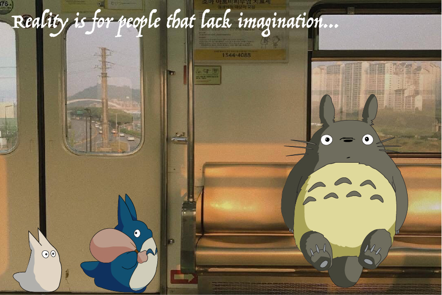

Home | Photoshop | Illustrator | Animate | Indesign | Contact |

For my Vector final project, I wanted to incorporate studio ghibli’s Totoro into a real-life setting.There is a popular scene showing Totoro waiting at a train stop and so I wanted to create an image showing him on the train as indicating that he has boarded. The most challenging part was taking into consideration of the shadows on the characters, hoping to make them look more realistic as if they are either sitting or walking through the train. I really enjoyed this project and was able to accomplish what I wanted the outcome to look like.